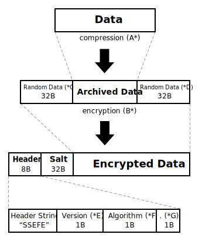

File Encryptor
(format specifications)

*A - Compression: Zip64 archive. CRC32 for each file within the archive.
*B - Encryption: Chosen algorithm in CBC mode. Padding ISO10126-2.
*C - Random data block: Random characters, "a-z" and "0-9" only, level 1 authentication - password verification.
*D - Random data block: Copy of the *C.
*E - Version: Current version 2.
*F - Algorithm Codes:
• 0 = AES (256 bit)
• 1 = RC6 (256 bit)
• 2 = Serpent (256 bit)
• 3 = Blowfish (256 bit)
• 4 = Twofish (256 bit)
• 5 = GOST28147 (256 bit)
• 6 = Blowfish (448 bit)
• 7 = Threefish (1024 bit)
• 8 = SHACAL-2 (512 bit)
*G - Reserve: 1B - not used in the current version.
Key Derivation Function
A new key/IV pair is generated by scrypt KDF for every single encryption operation. The pair is derived from Skein-1024 hash of a password using a random salt.
Scrypt Parameters:
N = 2048
r = 8
p = 10
Future (Version 3) Draft Notes
- Random access (archive browsing, only selected files for decryption);
- CTR mode probably;
- BLAKE2(sp) integrity check for each file;
- NeoScrypt as KDF;